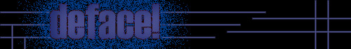

|  | ||
In omaggio a Piero Cannata. Deface! è lo sfregio nella sua accezione non negativa, atto di reale unione tra colui che ha realizzato originariamente l'opera e colui che finalmente non è solo un mero fruitore dell'opera stessa, ma ha la possibilità di intervenire su di essa attivamente facendola definitivamente anche propria. ISTRUZIONI PER L'USO. 1. Scarica dal nostro archivio l'immagine del dipinto che vuoi "sfregiare". 2. Intervieni sull'opera nella maniera che preferisci. 3. Spedisci l'immagine modificata a deface@acidlife.com Noi provvederemo ad inserire la nuova opera al posto della precedente. | ||
| A PROJECT BY TSNUKITNA |
|
acidlife |
english version |